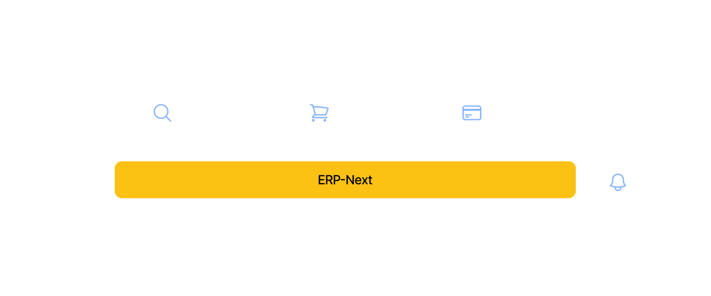
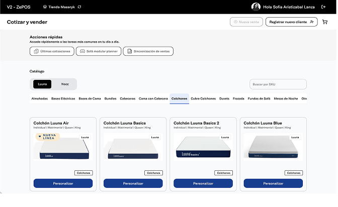
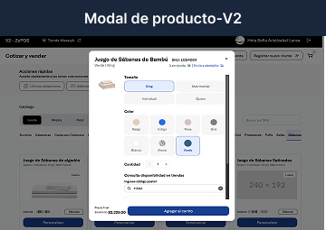
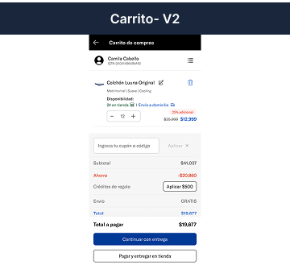
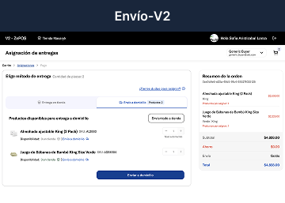
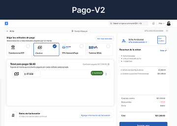

200 stores, zero downtime. A system redesigned to scale.
From a fragile POS with critical dependencies to a multichannel platform. End-to-end redesign of architecture, flows, and real-time operations — launched before Buen Fin.
hero.png
CompanyZebrands
Duration8 months
Team18 people
MarketsMexico · Brazil
My roleUX Lead — sole designer
−80%
Sync errors
75%
Users with higher perceived speed
−50%
Time to create an order
200+
Stores with zero launch incidents
Context
Zebrands is an omnichannel retail company with operations in Mexico and Brazil. As part of its multi-store ecosystem, it runs its own point-of-sale system used in more than 200 physical stores. In 2023, as the UX lead, I assessed the full state of the platform, working alongside a cross-functional team of frontend, backend, architecture, and technical leadership.
The project emerged after identifying critical performance, stability, and operational issues during high-demand events like Hot Sale. The work wasn't just about redesigning the interface — it meant rethinking a system capable of supporting real-time, multi-store transactional operations, reducing friction on the sales floor, and preparing the platform to scale sustainably.
The system in context — Luuna Brand
luuna.png
Context de marca y ecosistema de producto dentro de Zebrands
Project summary
The problem
The POS had high load times, an overloaded catalog, inconsistencies between modules, a critical dependency on the RPNext ERP, and no real-time stock visibility.
The goal
Turn the fragile system into a scalable platform by optimizing the catalog, availability, and operational flows — improving service speed, stability, and in-store experience.
My role
I led the UX strategy and experience as the sole UX designer for most of the project — defining flows and architecture, and collaborating on implementation in live operations.
The impact
A faster, more stable system. Successful rollout to 200+ stores before Buen Fin 2024 — the most critical high-demand event of the year.
System architecture — designing for a living system

diagrama.png
Architecture diagram — flows between catalog, cart, payments, and ERP
Critical decisions
01
Research with incomplete information
Solo store visits, direct interviews with sales staff, and SLA tracking with PostHog — while the technical team was focused on Brazil.
02
Design System independent from the ERP
Building a design system compatible with MCP that didn't depend on RPNext's release cycle — a decision that unblocked the team's velocity.
03
Prioritizing performance over complexity
Designing for intermittent connectivity. Prioritizing load times and operational stability before adding new features.
How did we work under pressure?
1
Research
Field research
Store visits, sales staff interviews, error detection, and SLA tracking via PostHog.
2
Architecture
Event Storming
Workshop to map the domain and redefine the event architecture with backend.
3
Design
Design en paralelo
Flows and prototyping of the 3 critical flows: catalog, cart, and payments/shipping.
4
Validation
Pilot and rollout
Pilot testing, fast iteration, and a progressive rollout to 200+ stores.
Operational impact — before vs after timing
Performance
Initial load4–6 s→<3.5 s
Catalog search4–6 s→3–5 s
Order confirmationvariable→<15 s
Error reduction
Sync errorshigh→−80%
Catalog errorsfrequent→−5%
Service errorscritical→−1%
Trust and adoption
Time per order4–6 min→3–5 min
Shipping confirmationslow→<15 s
Launch incidentscrash→0
The POS was rolled out progressively — pilot stores → validation → full flow — scaling to 200+ stores before Buen Fin 2024 with no major operational incidents.
Before vs After — critical flows
Catalog
Catalog V1
catalogo-v1.png
Slowness — the catalog creates operational bottlenecks
Overloaded with discontinued products
Passive search with no filters
Missing visibility of key product information
Catalog V2

catalogo-v2.png
Optimized search with multiple filters
Only active, relevant products
Intuitive, multichannel product cards
Key information visibility resolved
Product modal
Modal V1
modal-v1.png
Overload of non-essential information
Falta de elementos para el flujo critical
Unclear information architecture
Modal V2

modal-v2.png
Intuitive card design with improved architecture
Visual support for relevant product features
Integrated availability — no external platforms needed
Cart
Cart V1
carrito-v1.png
Overload of non-essential information
Falta de elementos para el flujo critical
Unclear information architecture
Cart V2

carrito-v2.png
Improved information architecture
Fast, smooth checkout
Real-time availability visibility
Shipping
Shipping V1
envio-v1.png
Flujo critical en un solo modal sin salida
Insufficient feedback during calculation steps
Missing assignment and delivery logs
Shipping V2

envio-v2.png
Fully redesigned flow with real-time configuration
Integrated inventory services
Redesigned cards to speed up in-store sales
Payment
Payment V1
pago-v1.png
Disorganized payment methods with no hierarchy
Feedback insuficiente en procesos criticals
Unclear error states with no recovery path
Payment V2

pago-v2.png
Simple, step-by-step guided flow
Clear, real-time states
Secure experience with clear exit states
What this project changed in how I design
Takeaways
Designing for resilient systems
Designing complex systems means thinking beyond screens: understanding architecture, operations, scalability, and how every interaction directly affects people working under real-time pressure.
Performance is also UX
It's not just about making the user happy on the ideal path. Thinking about failures, states, and recovery is as much a part of design as the main flow.
Architecture shapes experience
Backend and UX aren't separate worlds. Collaboration is key: every technical decision has direct consequences on how the product feels and functions.
Scaling requires clarity
Simple systems, clear metrics, and solid documentation make it possible to grow without losing control of operations or product consistency.
"Designing complex systems taught me that information architecture shapes experience — every technical decision has direct consequences for the people who use the product every day."